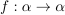
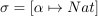
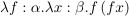
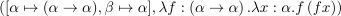
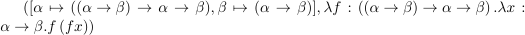
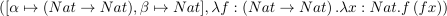
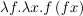

型再構築¶
静的型付き言語には，大きく分ければ，すくなくとも， 明示的に 型付けされた 言語と， 暗黙に 型付けされた言語がある．明示的に型付けされた言語というのは， 変数や，仮引数について，型注釈を逐一要求する手の言語だ．暗黙に型付けされた 言語というのは，いわゆる 型推論 という方法で，変数や，仮引数の型注釈を 言語が自動的にしてくれる手の言語だ．ぼくが知る限り，型推論といえばこの言語を あげよう，と思って最初にあげたい言語は OCaml だ．たとえば，
let f x = x + x
のように書くと，型を注釈していないにも関わらず， これは int -> int だということになる． (すこし本筋からズレることになるけど， Haskell の型クラス のような機能は，型推論と相性が悪いのかもしれない，と思うことがよくある．)
型再構築は，そうした，項に暗黙の型付けをする．型再構築という用語は，聞き慣れない かもしれない．型推論と言ったほうがツイのオタクどもはよく知っていると思う． 型システム入門では，型再構築という見出しになっている．だから，このページでも 型再構築という言葉を使うことにする．
型再構築について，型システム入門では，22章で触れられている．このブログは備忘録に すぎない．もし興味があるなら，型システム入門を読んでみてほしい．
型変数と型代入¶
型再構築の話をする前に，型代入の話をする．型変数とか，型代入って一体なんだろう？ 型システム 入門ではとても形式的に定義されているようだけど，ここでは直感的な例で説明をする．
たとえば，
のような f があったとする． f は， Nat→Nat にも， String→String にもなれる． α→α の α を Nat に置き換え， Nat→Nat を得る操作を代入という． α というような代入できる型のことを型変数という．
この例で，代入という操作 σ を
のように書く．それから，代入 σ を
に適用することを，
のように書く．
代入 σ を f に適用すると f:Nat→Nat が得られる．
解¶
項の型に型変数が含まれているが，そのままでは型付けできないときがある． しかし，そのような場合でも，うまく代入すれば，整合性がとれる場合がある． たとえば，
のようなラムダが書いてあったとする．このままでは，型が合わない． しかし， α を α→α に， β を α に置き換えれば，うまく型が合う． 項 t にそのような代入 σ が存在するとき， σ と σ を t に適用した型を合わせたペア (σ, σt) を解という．解はひとつではないかもしれない．たとえば，この項の解には 次のようなものが考えられる．
- 
- 
- 
単一化と主要型¶
解はひとつではないかもしれない，と述べた． しかし解がひとつではないとすれば，それは解釈が曖昧ということだ． Haskell でもよく見る ambiguous とかいうやつだ． どうにかして解をひとつにする必要がある．
主要解は，解のうちでもっとも 一般的 なものをいう． 簡単にいうと， α→α は Nat→Nat より一般的だ．もし そのどちらもが解なら， α→α が主要解となる．主要解は (σ, T) のようになってる から，この T を主要型という．
単一化は，主要型を見つけ出す方法のことをいう．
たとえば，
は，解として
が考えられる．そこで，これを単一化すると，
が選ばれる．
型再構築¶
解 で α とか β を型としているラムダも，型代入すれば型を合わせられると言った． たとえば，
は，このままでは型が合わない．そこで，
このようにすればよい． しかし，もはや α とか β は書いてある意味がない． α や β は任意の型だからだ．そこで，これを省略することとする．
これで型を明示しなくなった．しかも，α とか β が， 書いていないが本当はそこに書いてあるのだということにすれば， 前述したことと同じことをすれば
のように型をつけられるはずだ．
解はあるが，主要型はないとき (解釈が曖昧なとき) は， 単一化ができないということでエラーにする．
解がそもそも存在しない，という場合には，型が合っていないということになる． これもエラーにする．
これで，型再構築ができた．暗黙的に型付けされた言語のできあがり．